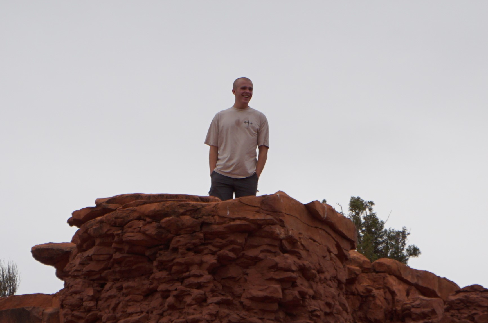

A Resuable metal can
Reid Bruski

Hi! I'm Reid Bruski, a current senior at Central Magnet School.
I was born around Detroit, Michigan, but have been living here in
Tennessee since I was 5. One of my biggest passions lies in anything mechanical,
anything that I can get my hands on that moves.